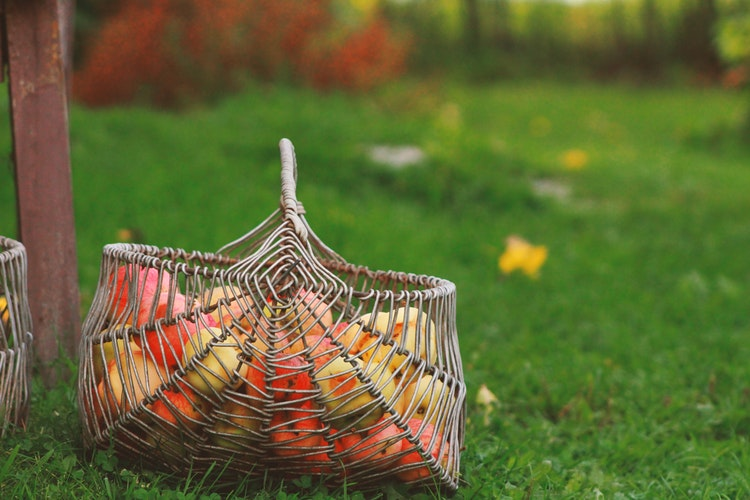
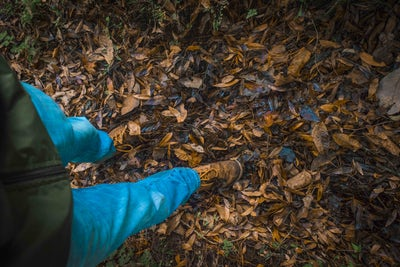

Seasonal Treats
The season is not complete without a spooky cookie from Hell's Kitchen staple Schmackary's. Hurry before they're gone!
Macy's Thanksgiving Day Parade
Join thousands of local and tourists alike at one of NYC's oldest beloved parades! This year, the parade starts at 9am on November 22nd. Come early to secure the best views!

Apple Picking
Visit one of NY's blooming orchards for a day of apples, cider and donuts.

Hiking
Take the Metro North up the Hudson Valley to enjoy majestic views and amazing fall foliage.